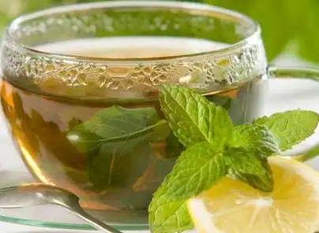
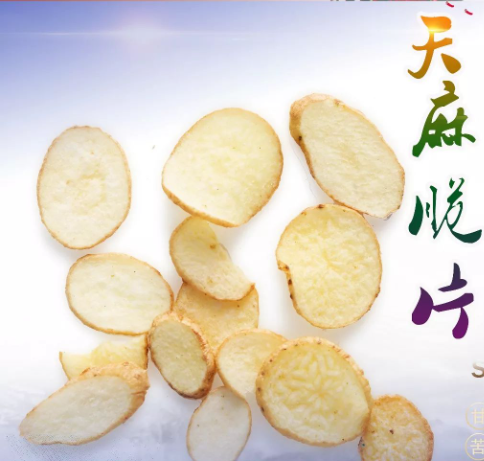

产品展示

天麻茶
天麻茶是以天麻为主要原料的养生饮品，通过切片或研磨后与茶叶（如绿茶）搭配冲泡而成，具有平肝息风、镇静安神、改善头痛头晕等核心功效。 其核心成分天麻素能调节中枢神经，缓解肝阳上亢型高血压引起的眩晕，临床数据显示对偏头痛、神经衰弱有效率超80%。现代快节奏生活中，天麻茶因便捷性（3-5克/日）成为上班族和学生缓解脑疲劳的首选，同时天麻多糖成分可增强免疫力，辅助改善记忆功能。需注意孕妇、气血虚者禁用，且建议搭配枸杞、菊花等辅料以平衡药性

天麻脆片零食
天麻脆皮零食是以云南昭通小草坝天麻为核心原料，通过低温冻干技术制成薄片后，佐以黑芝麻、核桃碎等辅料制成的便携休闲食品。其核心功效体现在三方面：一是天麻素调节中枢神经，临床数据显示对偏头痛、神经衰弱有效率超80%；二是天麻多糖增强免疫力，适合体虚易感人群；三是蜂蜜浸渍工艺改善口感，清脆甘甜中保留药效，实现"药食同源"的便捷补充。每100g产品含天麻85%以上，开袋即食或泡水饮用均可，成为现代职场人缓解脑疲劳、学生增强记忆力的健康选择。

天麻精华护发素
天麻精华护发素是以天麻提取物为核心成分的护发产品，通过天麻素和天麻多糖的协同作用，实现滋养修护、改善毛躁、去屑防脱三重功效。其核心成分天麻素能调节头皮微生态平衡，减少有害菌滋生，缓解头屑瘙痒问题；天麻多糖则深入发丝修复毛鳞片损伤，使头发恢复柔顺亮泽。临床数据显示，连续使用28天可使头发断裂率降低35%，头皮油脂分泌减少20%。该产品特别适合频繁烫染、易断发质人群，建议搭配同系列洗发水使用效果更佳。
用户评论
用户1
这个产品真的很好，效果显著！
用户2
非常喜欢这个平台，内容丰富，产品也很棒！
用户3
天麻茶真的好喝，推荐给大家！
添加评论